Chapter 7 Project 11: A Low-Precision Training Study
Nearly every large model of the last five years was trained with fewer bits than the FP32 its optimiser was designed for. BF16 matmuls are the default, FP8 is standard on Hopper-class GPUs, and the newest accelerators add FP4 tensor cores whose throughput is twice that of FP8 again. Each step down saves memory, bandwidth and time, and each step down has broken someone’s training run. The failures are rarely loud. A loss that stops improving a little early, a gradient that is zero in three layers out of forty, a learning-rate schedule whose last third does nothing: these are the symptoms, and they are easy to blame on the model, the data or the optimiser instead of the number format.
Chapters 4 and 5 gave us the tools to reason about these failures one tensor at a time: what a cast does to a value, why an update smaller than half an ulp vanishes, how block scaling buys range. This project asks the question one level up, where it matters: when does the training run break, and which fix recovers it? We train two small models, an MLP and a tiny decoder-only transformer, under two dozen precision recipes (FP16 with and without loss scaling, BF16 with and without master weights, FP8 with per-tensor delayed, per-tensor current and block scaling, MXFP4 and NVFP4, limited-precision accumulators, low-precision normalisation and softmax) and instrument every run so that each failure comes with a mechanism and a counter that measures it.
This is the second capstone of Part I, and it uses nothing beyond Part I. Our A100s have no FP8 or FP4 tensor cores, so every format below BF16 is emulated: tensors are rounded onto the format’s grid by the bit-exact simulator of Chapters 4 and 5 and carried on in FP32. The emulation reproduces the numerics of these formats exactly and their speed not at all; an emulated FP8 step is slower than an FP32 one. The kit provides the models, the synthetic tasks and a complete reference solution in code/projects/p11_lowprec/reference/. Attempt each milestone before reading it.
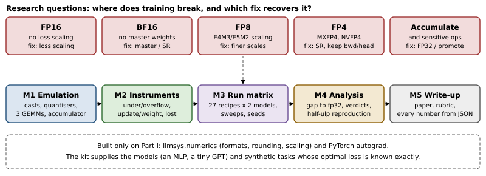
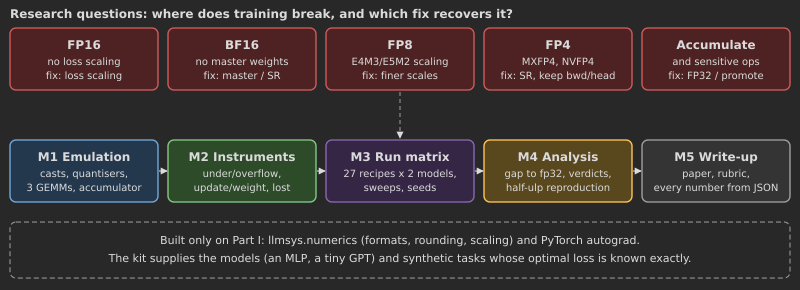
7.1 The project at a glance
7.1.1 Research questions
A precision recipe assigns a format to each role a number plays in training: the inputs of each matrix multiplication, its accumulator, the activations and gradients stored between kernels, the normalisations and the loss, the weights the optimiser updates, and the optimiser’s own state. Chapter 5 derived the standard recipe from first principles. This project tests it by removing one safeguard at a time.
- FP16 without loss scaling. FP16’s smallest subnormal is \(2^{-24}\approx6\times10^{-8}\). Which gradients fall below it, how many, and at what gradient scale does the loss start to suffer? Does a static scale suffice, or is dynamic scaling needed?
- BF16 without master weights. With weights stored in BF16 and updated with round-to-nearest, every update below half an ulp is lost. Which fraction of updates is lost, can we predict it from the update-to-weight ratio alone, and does stochastic rounding recover the FP32 loss?
- FP8. With E4M3 forward and E5M2 backward, what does each scaling rule buy: no scaling, per-tensor delayed scaling from an amax history, per-tensor current scaling, and 1-D block scaling with E4M3 everywhere?
- FP4. MXFP4 (E2M1 in blocks of 32 with a power-of-two scale) and NVFP4 (blocks of 16 with an E4M3 scale and a tensor scale), applied to all three GEMMs of every linear layer. Where do they break, and which fix recovers them: stochastic rounding of gradients, keeping the backward pass in BF16, or keeping the output layer in BF16?
- Accumulation and sensitive operations. Does a BF16 accumulator break training, and does promoting partial sums to FP32 every 128 elements fix it? What happens when LayerNorm, softmax and the loss are computed in BF16 or FP16 instead of FP32?
Each answer is a verdict (the run is as good as FP32, degraded, broken or diverged) with a mechanism and a measured counter behind it. And one finding of the literature is reproduced quantitatively: that BF16 weights updated with round-to-nearest lose precisely the updates smaller than half the local gap (Section 7.7), together with the activation-gradient histogram that motivated loss scaling (Micikevicius et al., 2018).
7.1.2 Prerequisites
Chapter 2: tensors and dtypes, autograd (we write custom autograd.Functions) and the training loop (Sections 2.4 and 2.7). Chapter 3: the asynchronous execution model, which explains why our emulation’s cost is dominated by kernel launches (Section 3.7). Chapter 4: the formats (Sections 4.3 and 4.4), rounding and the lost update (Section 4.5) and accumulation (Section 4.6). Chapter 5: block scaling (Sections 5.1 and 5.3) and the mixed-precision recipes (Sections 5.6 and 5.7). The library llmsys.numerics is used, not modified. The models are provided because Part II, where the reader builds a transformer, comes later. AdamW appears as a black box; the one property of it we need (its update has a magnitude close to the learning rate) is derived where we use it. Part III’s treatment of optimisers (Chapter 19) and mixed precision in large runs (Chapter 20) are optional reading, and extensions that need them are marked.
7.1.3 Milestones and acceptance tests
| Milestone | Deliverable | Automated acceptance (test_p11_acceptance.py; CPU unless marked GPU) |
|---|---|---|
| 1 Emulation layer | element casts, quantisers with six scaling rules, a linear layer whose three GEMMs are quantised along their own reduction dimensions, an emulated accumulator, storage casts | casts bit-exact against torch.float16, bfloat16, float8_e4m3fn, float8_e5m2 over 200,000 values including ties, subnormals and overflow; block, MX and NVFP4 quantisers equal numerics; forward and both backward GEMMs equal hand computations; accumulator equals numerics.matmul_sim; GPU: casts bit-exact on CUDA |
| 2 Instrumentation | overflow, underflow and subnormal counters per operand role; update-to-weight ratio, lost-update fraction and its half-ulp prediction; gradient histograms; loss floors | counters on crafted tensors and against numerics.classify; delayed scaling overflows on a spike and recovers; half-ulp rule equals the measured loss of updates on 100,000 random updates; optimiser storage modes; loss scaler |
| 3 Run matrix | recipes as data; two models; synthetic tasks; seeds and sweeps; results JSON written after every run | every recipe builds; tiny runs bit-identical across repeats; end-to-end study on the CPU |
| 4 Analysis | excess loss over the floor, gap to FP32, verdicts, failure/fix table, the half-ulp reproduction | verdicts on synthetic curves; tiny runs show each mechanism’s counter; GPU: unscaled FP8 measurably worse than scaled |
| 5 Write-up | the paper, figures from figures.py |
rubric (Section 7.8.1) |
The tests check the instrument, not the science. A correct emulation layer and correct counters are testable without a GPU; whether a recipe breaks at a given scale is a finding, argued in the write-up with seeds and error bars.
7.1.4 The kit
code/projects/p11_lowprec/
reference/ the reference solution (a package)
emulate.py milestone 1: cast, Quantizer, Counter, qmm, QLinearFn, StorageCast
recipes.py recipes as data: Recipe, RECIPES, FIXES, make_recipe
models.py Precision, MLP, TinyGPT, sensitive ops in a chosen format
data.py TeacherRegression and MarkovLanguage: tasks with known loss floors
optim.py LowPrecisionAdamW, update_stats, the half-ulp rule
train.py one instrumented run; loss scaling; divergence detection
study.py milestone 3: expand a config into runs, run, write results
analysis.py milestone 4: excess loss, gap, verdicts, tables, Markdown report
diagnose.py rounding_bias: the bias of a format on a captured tensor
run.py driver: --config, --only, --device, --out
figures.py this chapter's figures from a results file
diagnose_fp8_head.py the FP8 output-head diagnostic of the results section
configs/ smoke.json (about 53 min), full.json (the study), cpu.json (dry run)
results/ smoke_a100_pcie.json and .md: the smoke run quoted in this chapter;
diag_fp8_head_a100_pcie.json: the FP8 diagnostic runs
test_p11_acceptance.py, Makefile (test, test-gpu, dry, smoke, full, figures), README.mdcd code/projects/p11_lowprec
make test # CPU acceptance tests on reference/ (seconds)
P11_IMPL=~/my_p11 make test # your package: same module names as reference/
make dry # every code path on the CPU, tiny sizes
make smoke # every recipe once on one A100
python run.py --config configs/smoke.json --only bf16_pure fp8 # a subset plus its baselines| Module | What the acceptance tests call |
|---|---|
emulate |
cast, QSpec, Quantizer (with .counter), Counter, Log2Histogram, AccSpec, qmm, QLinearFn, store, FORMATS |
recipes, models |
make_recipe, RECIPES; Precision (with .policy) |
optim, train |
predicted_lost, relative_half_ulp, LowPrecisionAdamW; train, LossScaler |
data, study, analysis, diagnose |
MarkovLanguage; run, expand; verdict, gap, final_val, render_markdown; rounding_bias |
7.2 Milestone 1: emulating formats we do not have
7.2.1 Fake quantisation
The A100’s tensor cores multiply FP16, BF16, TF32, INT8 and INT4 operands; FP8 arrived with Hopper and the MX and NVFP4 formats with Blackwell. To study a format the hardware lacks we fake-quantise: a tensor \(x\) that a recipe puts in format \(F\) with scale \(s\) is replaced by \[\hat{x} = s\cdot\operatorname{round}_F\!\left(\frac{x}{s}\right), \tag{7.1}\] computed and stored in FP32. Every value of every format up to BF16 is exact in FP32, and so is the product of an FP8 or FP4 value with a power-of-two scale, so \(\hat{x}\) carries exactly the information a real FP8 tensor would. A real FP8 GEMM multiplies the codes and applies \(s\) to the accumulated result; we multiply the dequantised values. The two agree up to the accumulation order, which we model separately (Section 7.2.4).
The rounding function comes from llmsys.numerics.round_to_format, which rounds in float64 to any FloatFormat. When PyTorch has the format as a dtype we can also round by casting there and back; the acceptance tests require the two to agree bit for bit on every probe value, and the training loop uses the native cast where it exists because it is much faster (two kernels instead of about twenty; on a CPU, 0.13 ms against 11 ms for a million values).
emulate.cast).
def cast(x, fmt, rounding="rne", generator=None, backend="auto"):
if fmt == "fp32" and (rounding == "rne" or x.dtype == torch.float32):
return N.round_to_format(x, N.FP32) if x.dtype == torch.float64 else x.float()
native = fmt in TORCH_DTYPES and rounding == "rne" and x.dtype != torch.float64
if backend == "torch" or (backend == "auto" and native):
return x.float().to(TORCH_DTYPES[fmt]).float() # one RNE rounding, then exact
if backend == "auto" and fmt == "bf16" and rounding == "stochastic":
return N.stochastic_round_bf16(x, generator).float() # the bit trick of kernels
return N.round_to_format(x, FORMATS[fmt], rounding, generator=generator)Two details of Listing 7.1 matter. A float64 input is rounded once, directly to the target; converting it to FP32 first would round twice, and double rounding is wrong whenever the first rounding lands exactly on a tie of the second (a test constructs such a value). And the FP8 casts of PyTorch 2.14 saturate E4M3 (448 for anything larger, including infinity) but overflow E5M2 to infinity, exactly as the OCP specification and numerics define them; the bit-exact test covers both edges.
Systems Lens: Emulation measures numerics, not speed
An emulated low-precision step is slower than FP32, not faster. Every quantised operand costs a scale computation, a division, a rounding (several kernels in float64 for formats without a native dtype) and a multiplication, and block formats add reshapes. On our tiny models the step is bound by kernel launches (Section 3.7), so the cost grows with the number of casts rather than their size: the smoke run measured 14 ms per step for FP32, 44 for BF16, 48 for per-tensor FP8 and 86 for MXFP4 on the transformer (Table 7.4). Nothing in this project says how fast FP8 training is; for that one needs FP8 tensor cores, and Chapter 6’s methods applied to an H100. What emulation does give us is the exact sequence of roundings a real FP8 or FP4 run would perform, under our control, with a counter on every cast.
7.2.2 Scaling rules
A narrow format has a fixed range: E4M3 spans \(2^{-9}\) to 448, E5M2 \(2^{-16}\) to 57,344, E2M1 only \(0.5\) to 6. A scale \(s\) moves a tensor into that range. The quantiser of the kit (emulate.Quantizer) implements six rules, the four of (7.2) and the MX and NVFP4 block rules: \[s =
\begin{cases}
1 & \text{none}\\[2pt]
\dfrac{\max_i |x_i|}{F_{\max}} & \text{current (per tensor)}\\[8pt]
\dfrac{\max\{a_{t-L},\dots,a_{t-1}\}\cdot 2^{\mu}}{F_{\max}} & \text{delayed (per tensor)}\\[8pt]
\dfrac{\max_{i\in b} |x_i|}{F_{\max}} \;\text{ for each block } b & \text{block}
\end{cases}
\tag{7.2}\] where \(a_t\) is the amax recorded for the same tensor at step \(t\), \(L\) the history length (16 in our recipes) and \(\mu\) a safety margin in binades. MX and NVFP4 are block rules with their own scale formats (Section 5.1): an E8M0 power of two per 32 elements, chosen by the OCP rule \(2^{\lfloor\log_2 \text{amax}\rfloor - e_{\max}}\) so the largest element may saturate, and an E4M3 scale per 16 elements under an FP32 tensor scale.
The rules differ in when the amax is known. Current scaling needs a full reduction over the tensor before the first element can be cast: an extra read, or a global synchronisation inside a fused kernel. Delayed scaling uses last step’s amax, so the cast fuses into the kernel that produces the tensor, at the risk that a tensor larger than its history saturates. Block scaling needs only a local reduction, which one warp can do. We count the price of each: the counters of Section 7.3 report how many elements each rule clipped or flushed.
Quantizer.__call__: scale, round, saturate, count, unscale.
if sp.scaling == "tensor": # current: amax of this tensor, now
amax = x.detach().abs().amax().float()
scale = torch.where(amax > 0, fmt.max_finite / amax, torch.ones_like(amax))
elif sp.scaling == "delayed": # Transformer-Engine style: last steps' amax
if not self.amax.history:
self.amax.update(x) # seed the history on the first call
scale = self.amax.scale # numerics.AmaxHistory: F_max / max(history)
self.amax.update(x)
y = x if scale is None else x * scale
q = cast(y, sp.fmt, sp.rounding, self.generator)
if sp.fmt in ("e4m3", "e5m2", "e2m1"):
q = q.clamp(-fmt.max_finite, fmt.max_finite) # FP8/FP4 conversions saturate
self.counter.add(x, y, q, fmt) # overflow, underflow, subnormal
return q if scale is None else q / scale7.2.3 Three GEMMs, three reduction dimensions
A linear layer \(Y = XW^\top\) with \(X\in\mathbb{R}^{n\times d_{\text{in}}}\) (\(n\) tokens) and \(W\in\mathbb{R}^{d_{\text{out}}\times d_{\text{in}}}\) performs three matrix multiplications per training step: \[Y = Q_x(X)\,Q_w(W)^\top,\qquad
\frac{\partial L}{\partial X} = Q_g\!\left(\frac{\partial L}{\partial Y}\right) Q_{wb}(W),\qquad
\frac{\partial L}{\partial W} = Q_g\!\left(\frac{\partial L}{\partial Y}\right)^{\!\top} Q_{xb}(X).
\tag{7.3}\] The first reduces over \(d_{\text{in}}\), the second over \(d_{\text{out}}\), the third over the \(n\) tokens (Figure 7.2). Fake-quantising only the forward pass, which is what a naive forward hook does, leaves the backward pass in FP32 and measures the wrong thing: the FP8 literature’s central difficulty is the gradients, with their wider range (Micikevicius et al., 2022). So the kit’s layer is a custom autograd.Function that quantises all five operands.
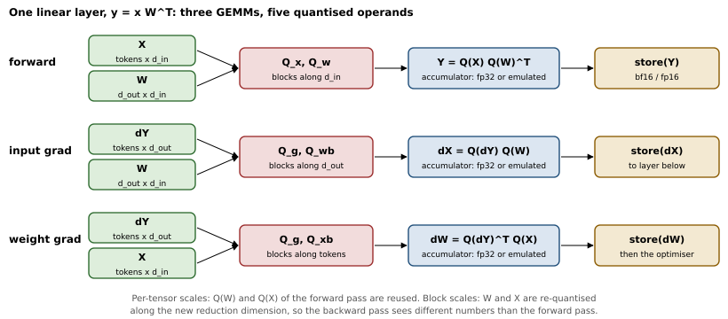
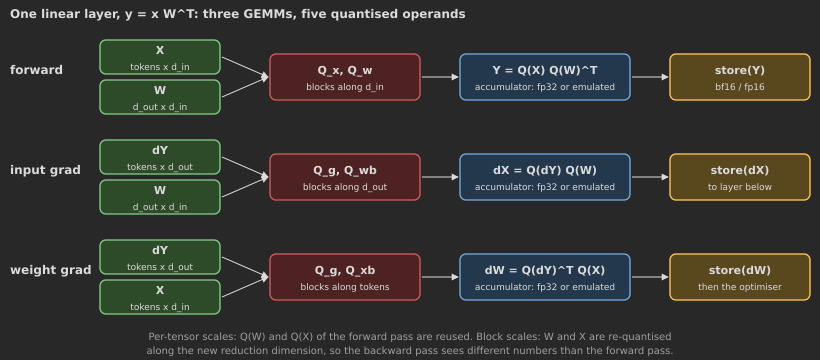
Block scales must run along the reduction dimension, because a scale is applied to the partial sum over the elements it covers: a block of 32 consecutive elements of one row along \(K\) contributes \(s_b\sum_{k\in b}\tilde a_k\tilde b_k\), while a block laid along the other dimension would give every term of one dot product its own scale, and the scales could no longer be factored out of the sum that the tensor core computes. For per-tensor scales the orientation is irrelevant, and FP8 libraries cast \(W\) and \(X\) once and keep the cast and its transpose. For block scales \(W\) is blocked along \(d_{\text{in}}\) in the forward pass and along \(d_{\text{out}}\) in the backward pass: the backward pass multiplies different numbers from the forward pass, and the weight gradient is, strictly, the gradient of a slightly different function. This is a real property of MX training, not an artefact of emulation; Rouhani et al. (2023) re-quantise transposed operands, and the NVFP4 training recipe uses \(16\times16\) two-dimensional weight blocks precisely so that the forward and backward quantisations of \(W\) coincide (NVIDIA, 2025).
emulate.QLinearFn): five quantisers, three GEMMs, storage casts.
class QLinearFn(torch.autograd.Function):
@staticmethod
def forward(ctx, x, w, b, pol):
y = pol.mm(pol.q["x"](x, -1), pol.q["w"](w, -1).t()) # reduce over d_in
if b is not None:
y = y + b
ctx.pol, ctx.has_bias = pol, b is not None
ctx.save_for_backward(x, w)
return pol.store(y) # e.g. bf16 activations
@staticmethod
def backward(ctx, gy):
pol = ctx.pol
x, w = ctx.saved_tensors
qg = pol.q["g"]
g_dx = qg(gy, -1) # blocks along d_out
g_dw = qg(gy, 0) if qg.spec.blocked else g_dx # blocks along tokens
gx = pol.store(pol.mm(g_dx, pol.q["wb"](w, 0))) # reduce over d_out
gw = pol.store(pol.mm(g_dw.t().contiguous(), pol.q["xb"](x, 0))) # over tokens
gb = pol.store(gy.sum(0)) if ctx.has_bias else None
return gx, gw, gb, NoneThe test test_qlinear_three_gemms_follow_the_recipe rebuilds all three products by hand with numerics.fake_quantize for the block-FP8 recipe and requires bit equality, which is the only way to be sure the orientation of each block is right: a transposed block silently produces a plausible but wrong gradient.
7.2.4 The accumulator
The A100’s tensor cores accumulate BF16 products in FP32, and FP16 products in FP32 too unless a library asks for an FP16 accumulator, so a plain FP32 matmul of the quantised operands is a faithful model of the standard recipes. To study narrower accumulators (BF16, or the roughly 14-bit accumulator DeepSeek-V3 reports for Hopper FP8 GEMMs, numerics.ACC_E8M13), emulate.qmm splits \(K\) into chunks of \(c\) elements, computes all chunk products in one batched GEMM, and adds them into a running sum rounded to the accumulator’s format after every chunk; with a promotion interval \(P\) the running sum is added into an FP32 total every \(P\) elements and reset. A BF16 running sum of \(K/c\) chunk products, each rounded with unit roundoff \(u=2^{-8}\), has an error that grows like \[\frac{|\delta|}{|\textstyle\sum|} \lesssim u\,\sqrt{K/c}\quad\text{(random signs)},\qquad
\lesssim u\,K/c\quad\text{(worst case)},
\tag{7.4}\] and promotion caps \(K/c\) at \(P/c\) (Section 4.6). The weight-gradient GEMM is the one exposed: its \(K\) is the number of tokens in the batch, 2,048 in our smoke configuration, against 32 (the vocabulary, for the output head’s input gradient) to 256 for the other two. qmm equals numerics.matmul_sim bit for bit on float64 inputs (an acceptance test), so the emulation inherits the simulator’s verification.
7.2.5 Storage and the sensitive operations
Between GEMMs, a BF16 recipe keeps activations and their gradients in BF16. emulate.store is an autograd function that rounds its input on the way forward and its gradient on the way back; we apply it after every GEMM, activation function, residual addition and attention product. The “sensitive” operations, LayerNorm, softmax and the loss, run in FP32 in the standard recipe. To ask what that buys (research question 5), models.py also implements each of them with every intermediate rounded to a chosen format:
fmt (from models.layer_norm).
def layer_norm(x, weight, bias, fmt, eps=1e-5):
if fmt == "fp32":
return F.layer_norm(x, x.shape[-1:], weight, bias, eps)
r = lambda t: store(t, fmt)
mu = r(x.mean(-1, keepdim=True))
d = r(x - mu)
var = r(r(d * d).mean(-1, keepdim=True)) # d*d is where fp16 overflows (|d| > 256)
inv = r(torch.rsqrt(r(var + eps)))
return r(r(d * inv) * weight + bias)This is a model of a kernel that computes in its storage format, which is pessimistic: PyTorch’s own FP16 LayerNorm and softmax kernels accumulate in FP32 internally, and torch.autocast runs them in FP32 outright (Section 5.6). The ablation therefore bounds what the FP32 safeguard is worth rather than reproducing any particular library.
Pitfall: The FP32 baseline that is not FP32
On Ampere and later GPUs PyTorch may run FP32 matmuls on the tensor cores in TF32, with 10 fraction bits instead of 23, depending on torch.backends.cuda.matmul.allow_tf32 and torch.set_float32_matmul_precision. An “FP32” baseline that silently runs in TF32 has FP16’s precision with FP32’s range, and makes every other recipe look better than it is. study.run turns TF32 off before the first run and records the setting with the versions in the results file.
7.3 Milestone 2: instruments
A verdict without a mechanism is an anecdote. The instruments of this milestone are chosen so that every failure mode of Section 7.1 has a counter that moves before the loss does.
7.3.1 Cast counters
Every quantiser keeps device-side counts, read only at logging steps, so the counters add no synchronisation of their own (delayed scaling does synchronise: numerics.AmaxHistory reads each tensor’s amax back to the host, once per cast). For an input \(x\), its scaled value \(y=x/s\) and the rounded \(q\): \[\text{overflow: } |y| \ge F_{\max} + \tfrac12\operatorname{ulp}(F_{\max}),\qquad
\text{underflow: } x\ne0,\ q=0,\qquad
\text{subnormal: } 0<|q|<F_{\min,\text{normal}}.
\tag{7.5}\] The overflow threshold is the IEEE one: below it a value rounds to \(F_{\max}\) with an ordinary rounding error, at or above it the value becomes infinite or, in a saturating cast, is clipped by more than half an ulp. Counting \(|y|>F_{\max}\) instead would report every block maximum of a block-scaled tensor whose scale happened to round down by one FP32 ulp as an overflow, which is how our first version of the counter reported 0.5% overflow for a recipe that cannot overflow. The underflow fraction is reported per nonzero input, overflow and subnormal fractions per element. A fourth number turned out to matter more than the three of the definition: the underflow mass, the share of \(\sum_i|x_i|\) carried by the elements flushed to zero. A count says how often a format rounds a value to zero; the mass says whether the values it rounds to zero were worth keeping (Section 7.6.1 shows runs that flush a large share of their gradient elements and train normally). The acceptance tests check all four on a crafted FP16 tensor and the first three against numerics.classify on random ones.
7.3.2 Update-to-weight ratios and the half-ulp rule
The optimiser wrapper LowPrecisionAdamW runs AdamW in FP32 and then stores the weights in the recipe’s parameter format. At each logging step it snapshots the weights, computes the intended update \(\delta\) (the FP32 result minus the old weight) and the applied one (after rounding to the storage format), and records the update-to-weight ratio \(|\delta_i|/|w_i|\) and the fraction of nonzero intended updates that left the weight unchanged.
The half-ulp rule of Section 4.5 predicts that fraction. Let \(w\) be representable and \(g_\pm(w)\) the gap to its upper and lower neighbours. Round-to-nearest discards the update exactly when \[|\delta| < \tfrac12\, g_{\operatorname{sign}\delta}(w)
\tag{7.6}\] (ties go to the even neighbour, which happens with probability zero for continuous updates). For a format with \(m\) fraction bits and \(w\) in the binade \([2^e,2^{e+1})\), \(g_+ = 2^{e-m}\), and \(g_-\) is the same except at \(w=2^e\), where the step down enters the finer binade and \(g_-=2^{e-m-1}\). Dividing by \(|w|\in[2^e,2^{e+1})\) turns the rule into a band of relative updates: \[\frac{|\delta|}{|w|} \le 2^{-(m+2)} \;\Rightarrow\; \text{always lost},\qquad
\frac{|\delta|}{|w|} > 2^{-(m+1)} \;\Rightarrow\; \text{never lost}.
\tag{7.7}\] For BF16 (\(m=7\)) the band is \((2^{-9}, 2^{-8}] \approx (0.0020, 0.0039]\); for FP16 (\(m=10\)) it is \((2.4\times10^{-4}, 4.9\times10^{-4}]\). optim.predicted_lost evaluates (7.6) with numerics.next_after, and update_stats reports the prediction for BF16 and FP16 storage at every logging step of every run, including FP32 runs, where it answers the counterfactual “how many of these updates would BF16 weights have dropped?”
Napkin Math: The textbook update ratio is below BF16’s half-ulp
Adam normalises each gradient coordinate by its running RMS, so in steady state the update is \(|\delta_i|\approx\eta\,|m_i|/\sqrt{v_i}\lesssim\eta\): its size is set by the learning rate \(\eta\), not by the gradient. A weight of magnitude \(|w|\) therefore sees a ratio of about \(\eta/|w|\). The folklore healthy ratio is \(10^{-3}\). BF16’s band (7.7) starts at \(2^{-9}=0.00195\): at a ratio of \(10^{-3}\) every update to a BF16 weight is lost. With \(\eta=10^{-3}\), weights below \(\eta\cdot2^{8}\approx0.26\) always move and weights above \(\eta\cdot2^{9}\approx0.51\) never do; at the end of a cosine schedule that decays to \(\eta=10^{-4}\) the two thresholds are 0.026 and 0.051. GPT-style initialisation puts most weights near 0.02, so a BF16 run without a master copy freezes its LayerNorm gains (which sit at 1.0) from the first step at this learning rate, and its ordinary weights one by one as the learning rate decays. FP32 master weights cost 4 bytes per parameter to prevent this; stochastic rounding costs nothing in memory and replaces the bias by noise.
7.3.3 Gradient histograms and loss floors
At chosen steps the gradient quantisers also record a histogram of \(\log_2|g|\) of every gradient entering a GEMM, before any cast (emulate.Log2Histogram); this is the measurement behind Micikevicius et al.’s argument for loss scaling, and our reproduction of it (Section 7.7).
Napkin Math: How small are the gradients?
For a cross-entropy averaged over \(N\) scored tokens, the gradient with respect to logit \(j\) of token \(t\) is \((p_{t,j}-y_{t,j})/N\). Our smoke transformer scores \(N\approx64\times31\approx2{,}000\) tokens per step. A plausible successor with \(p=0.05\) gives \(2.5\times10^{-5}\approx2^{-15.3}\): below FP16’s smallest normal (\(2^{-14}\)), so stored as a subnormal with 8 or 9 significant bits instead of 11, and just above E5M2’s smallest subnormal (\(2^{-16}\)), so stored with one or two significant bits. An impossible token to which the model still gives \(p=10^{-4}\) contributes \(5.0\times10^{-8}\approx2^{-24.3}\), which FP16 rounds up to its smallest subnormal \(2^{-24}=5.96\times10^{-8}\), a 19% error; with \(p\lesssim5\times10^{-5}\) the gradient is below \(2^{-25}\approx2.98\times10^{-8}\) and FP16 flushes it to zero, as E5M2 and E4M3 already do for every value this small. Each layer of backpropagation multiplies by weights of size about 0.02 to 0.1 and sums over a few hundred terms, so the gradients deeper in the network sit within a few binades of these. Doubling the batch halves every one of them, which is why large-batch FP16 training depends on loss scaling and why FP8 gradients need a scale per tensor at least.
The last instrument is the task itself. A training curve that flattens could be a stall or could be the end of what the model can learn; to tell the two apart we use tasks whose best achievable loss is known in closed form, and measure every run by its excess loss above that floor (Section 7.4). The validation loss is always evaluated exactly, in FP32 with all emulation switched off (Precision.exact()), so it measures what the weights learned, not the noise of the format they are evaluated in.
7.4 The models and the tasks
The tiny GPT. models.TinyGPT is a pre-norm decoder-only transformer: token and learned position embeddings, \(L\) blocks of causal multi-head attention and a GELU MLP with LayerNorm before each, a final LayerNorm and a linear output head. The smoke configuration has two layers of width 64, four heads, context 32 and vocabulary 32 (106,240 parameters); the full one four layers of width 128 on a 64-token vocabulary. Every linear layer is a QLinear running Listing 7.3 under the policy its name selects, so a recipe can keep, for example, only the output head in BF16. The two attention products (\(QK^\top\) and \(PV\)) stay in the storage format, as in production FP8 recipes. Chapter 10 builds the same architecture properly; here it is 60 lines whose only job is to put a cast in every place a real run has one.
The Markov language. The transformer learns an order-2 Markov source over \(V\) tokens: every pair of previous tokens selects \(k=8\) possible successors, chosen at random, with Zipf probabilities \(p_j\propto 1/j\). Every context has the same next-token distribution up to relabelling, so the cross-entropy floor is its entropy, \[H = \ln H_k + \frac{1}{H_k}\sum_{j=1}^{k}\frac{\ln j}{j},\qquad H_k=\sum_{j=1}^k \frac1j,
\tag{7.8}\] which is 1.816 nats for \(k=8\). The first order tokens of each sequence are uniform and the loss is scored from the first position whose target has a full context. Predicting the source requires attending to the previous token, which the model learns in a visible phase transition a few hundred steps in, so the curve has an easy part (unigram and bigram statistics), a hard part (the attention circuit) and a long tail (the successor tables of all 1,024 contexts), each of which a broken format can disrupt differently.
The teacher regression. models.MLP (three hidden layers of 256, GELU) regresses the outputs of a fixed random teacher, a one-hidden-layer tanh network of width 32, from Gaussian inputs. The floor is zero, and the student keeps improving over several decades of mean squared error, so effects that appear only when gradients and updates become small, the two that loss scaling and master weights exist for, show up clearly.
7.5 Milestone 3: the run matrix
A recipe is a small dataclass (recipes.Recipe) with one field per role, and the run matrix is data too: a config lists models, recipes, seeds and sweeps, and study.expand turns it into runs. Table 7.3 lists the recipes of the smoke matrix, grouped by the research question they probe; recipes.FIXES records which recipe is meant to repair which failure, and the analysis prints the pairs side by side.
| Question | Recipe | GEMM inputs x / w / g | Storage | Weights | Other |
|---|---|---|---|---|---|
| baselines | fp32 |
fp32 | fp32 | fp32 | |
bf16 |
bf16 | bf16 | fp32 master | ||
fp16_dynamic |
fp16 | fp16 | fp32 master | dynamic loss scaling | |
| 1 FP16 | fp16_noscale |
fp16 | fp16 | fp32 master | no loss scaling |
fp16_static |
fp16 | fp16 | fp32 master | static scale \(2^{10}\) | |
| 2 BF16 | bf16_pure |
bf16 | bf16 | bf16, RNE | no master copy |
bf16_pure_sr |
bf16 | bf16 | bf16, stochastic | ||
| 3 FP8 | fp8_noscale |
E4M3 / E4M3 / E5M2, no scale | bf16 | fp32 master | |
fp8_delayed |
same, delayed per tensor (\(L=16\)) | bf16 | fp32 master | ||
fp8_tensor |
same, current per tensor | bf16 | fp32 master | ||
fp8_tensor_hp |
fp8_tensor with the output head in bf16 |
bf16 | fp32 master | ||
fp8_tensor_sr |
fp8_tensor with stochastic rounding of g |
bf16 | fp32 master | ||
fp8_e4m3_tensor |
E4M3 for all three, current per tensor | bf16 | fp32 master | ||
fp8_block |
E4M3 for all three, \(1\times128\) blocks | bf16 | fp32 master | ||
| 4 FP4 | mxfp4, nvfp4 |
E2M1, MX or NVFP4 blocks | bf16 | fp32 master | |
mxfp4_sr, nvfp4_sr |
same, stochastic rounding of g | bf16 | fp32 master | ||
mxfp4_sr_ceil |
mxfp4_sr with a scale rounded up (no saturation) for g |
bf16 | fp32 master | ||
mxfp4_fwd |
MXFP4 forward, bf16 backward | bf16 | fp32 master | ||
nvfp4_sr_hp |
nvfp4_sr with the output head in bf16 |
bf16 | fp32 master | ||
| 5 accumulation | bf16_acc, bf16_acc_promote |
bf16 | bf16 | fp32 master | bf16 accumulator, chunk 32; promotion every 128 |
| 5 sensitive ops | bf16_lowsens, fp16_lowsens |
bf16 / fp16 | bf16 / fp16 | fp32 master | LayerNorm, softmax, loss in bf16 / fp16 |
Two sweeps locate break points rather than just detecting breaks. The learning-rate sweep runs fp32, bf16_pure and bf16_pure_sr on the MLP at three peak learning rates, because the half-ulp rule says the BF16 failure is a function of \(\eta/|w|\). The loss-weight sweep multiplies the loss by \(w\in\{1, 10^{-2}, 10^{-3}, 10^{-4}\}\) and, to keep training mathematically unchanged, multiplies Adam’s \(\epsilon\) and the gradient-clipping threshold by the same \(w\): \[\delta = -\eta\,\frac{\hat m}{\sqrt{\hat v}+\epsilon}
\quad\xrightarrow{\;g\to wg,\ \epsilon\to w\epsilon\;}\quad
-\eta\,\frac{w\hat m}{w\sqrt{\hat v}+w\epsilon} = \delta .
\tag{7.9}\] In exact arithmetic the FP32 runs at every \(w\) are therefore identical (in our runs their final losses agree to eight significant digits, the residue of floating-point reassociation); any difference in an FP16 run is caused by FP16 alone, acting on gradients \(w\) times smaller. Small loss weights are not an artificial device: auxiliary losses such as the load-balancing loss of a mixture-of-experts model are routinely weighted by \(10^{-2}\) to \(10^{-3}\).
Key Idea: Remove one safeguard, change one thing
Every recipe of the matrix differs from a working baseline by exactly one safeguard, and every sweep varies one quantity that the mechanism under test depends on, with the rest of training made invariant to it. That is what turns “FP8 training was worse” into “E5M2 without a scale flushed 88% of the gradients entering the GEMMs, a per-tensor scale removed nearly all of it, and the run was still broken until the output head’s logit gradient alone was rounded stochastically or kept in BF16”.
7.6 Milestone 4: what breaks, and what fixes it
The smoke configuration runs every recipe of Table 7.3 once (seed 0) on both models, plus the two sweeps: 59 runs in 53 minutes on one A100 (GPU 1 of our box). Everything in this section is measured, at smoke scale, on 2x A100-40GB (PCIe), and comes from results/smoke_a100_pcie.json; it is one seed, so the gap between two runs that differ only in noise is not zero. The bf16 baseline, which should match FP32, lands at -0.02 on the transformer: gaps within about \(\pm0.1\) are inside single-seed noise, which is why the verdict threshold for “ok” sits there. Table 7.4 and Figure 7.3 give the overview.
| run | final val | gap | verdict | g flushed (count) | g flushed (mass) | lost updates | ms/step |
|---|---|---|---|---|---|---|---|
gpt/fp32 |
2.0237 | — | baseline | 0.0e+00 | 0.0e+00 | 0 | 14 |
gpt/bf16 |
2.0195 | -0.02 | ok | 6.6e-07 | 8.5e-44 | 0 | 44 |
gpt/bf16_pure |
2.0472 | +0.11 | degraded | 6.6e-07 | 1.7e-43 | 0.49 | 44 |
gpt/bf16_pure_sr |
2.0320 | +0.04 | ok | 5.7e-06 | 1.1e-42 | 0.44 | 46 |
gpt/bf16_lowsens |
2.0213 | -0.01 | ok | 3.7e-06 | 7.4e-43 | 0 | 48 |
gpt/fp16_noscale |
2.0317 | +0.04 | ok | 1.1e-01 | 5.6e-05 | 0 | 44 |
gpt/fp16_dynamic |
2.0345 | +0.05 | ok | 1.7e-02 | 3.8e-11 | 0 | 46 |
gpt/fp16_lowsens |
2.0636 | +0.18 | degraded | 2.6e-02 | 1.4e-10 | 0 | 49 |
gpt/bf16_acc |
2.0228 | -0.00 | ok | 7.0e-06 | 1.4e-42 | 0 | 63 |
gpt/bf16_acc_promote |
2.0334 | +0.05 | ok | 3.5e-07 | 1.0e-43 | 0 | 67 |
gpt/fp8_noscale |
3.4587 | +2.07 | broken, stalled | 8.8e-01 | 1.5e-01 | 0 | 45 |
gpt/fp8_tensor |
2.3899 | +1.02 | broken | 2.1e-03 | 1.2e-12 | 0 | 48 |
gpt/fp8_tensor_hp |
2.0468 | +0.11 | degraded | 1.5e-02 | 5.0e-12 | 0 | 48 |
gpt/fp8_tensor_sr |
2.0519 | +0.13 | degraded | 1.5e-02 | 5.0e-12 | 0 | 51 |
gpt/fp8_delayed |
2.4119 | +1.05 | broken | 2.4e-03 | 2.1e-12 | 0 | 48 |
gpt/fp8_e4m3_tensor |
2.1000 | +0.31 | degraded | 8.2e-02 | 4.5e-07 | 0 | 48 |
gpt/fp8_block |
2.0544 | +0.14 | degraded | 4.7e-02 | 6.3e-08 | 0 | 80 |
gpt/mxfp4 |
3.4748 | +2.08 | broken, stalled | 3.3e-01 | 2.0e-01 | 0 | 86 |
gpt/mxfp4_sr |
— | diverged | diverged | 2.8e-01 | 1.1e-01 | 0 | 87 |
gpt/mxfp4_sr_ceil |
2.2316 | +0.69 | broken | 3.9e-01 | 4.0e-02 | 0 | 84 |
gpt/mxfp4_fwd |
2.2319 | +0.69 | broken | 6.9e-04 | 1.7e-40 | 0 | 55 |
gpt/nvfp4 |
5.6369 | +2.91 | broken | 3.4e-01 | 3.9e-02 | 0 | 105 |
gpt/nvfp4_sr |
2.1475 | +0.47 | degraded | 3.0e-01 | 1.5e-02 | 0 | 106 |
gpt/nvfp4_sr_hp |
2.1566 | +0.49 | degraded | 2.9e-01 | 9.2e-03 | 0 | 99 |
mlp/fp32 |
0.0051 | — | baseline | 0.0e+00 | 0.0e+00 | 0 | 3 |
mlp/bf16 |
0.0051 | +0.00 | ok | 0.0e+00 | 0.0e+00 | 0 | 22 |
mlp/bf16_pure |
0.0125 | +0.90 | broken, stalled | 0.0e+00 | 0.0e+00 | 0.82 | 22 |
mlp/bf16_pure_sr |
0.0052 | +0.02 | ok | 0.0e+00 | 0.0e+00 | 0.74 | 28 |
mlp/fp16_noscale |
0.0051 | -0.00 | ok | 1.5e-02 | 3.6e-05 | 0 | 23 |
mlp/fp16_static |
0.0051 | +0.00 | ok | 3.1e-05 | 7.2e-11 | 0 | 26 |
mlp/fp16_dynamic |
0.0051 | +0.00 | ok | 1.4e-06 | 4.0e-14 | 0 | 27 |
mlp/fp8_noscale |
0.0076 | +0.41 | degraded | 6.9e-01 | 2.1e-01 | 0 | 23 |
mlp/fp8_tensor |
0.0058 | +0.14 | degraded | 9.3e-06 | 9.6e-15 | 0 | 31 |
mlp/fp8_e4m3_tensor |
0.0057 | +0.12 | degraded | 2.1e-04 | 3.3e-09 | 0 | 31 |
mlp/fp8_block |
0.0058 | +0.13 | degraded | 8.8e-05 | 3.8e-10 | 0 | 48 |
mlp/mxfp4 |
0.0362 | +1.96 | broken, stalled | 3.1e-01 | 2.5e-02 | 0 | 49 |
mlp/mxfp4_sr |
0.0380 | +2.01 | broken, stalled | 2.8e-01 | 2.8e-02 | 0 | 48 |
mlp/mxfp4_sr_ceil |
0.0371 | +1.99 | broken, stalled | 3.3e-01 | 4.2e-02 | 0 | 47 |
mlp/mxfp4_fwd |
0.0579 | +2.43 | broken, stalled | 0.0e+00 | 0.0e+00 | 0 | 22 |
mlp/nvfp4 |
0.0141 | +1.02 | broken | 2.6e-01 | 1.7e-02 | 0 | 55 |
mlp/nvfp4_sr |
0.0150 | +1.08 | broken, stalled | 2.5e-01 | 1.9e-02 | 0 | 56 |
The gap is the log-ratio of excess losses, \[\text{gap} = \ln\frac{L_{\text{run}} - L^\star}{L_{\text{fp32}} - L^\star}, \tag{7.10}\] with \(L^\star\) the floor: 0 when a run is as good as FP32, \(\ln2=0.69\) when it leaves twice the reducible loss. A run is “ok” below 0.10, “degraded” up to 0.69 and “broken” above; “stalled” marks a broken run whose excess loss fell by less than 5% over the last quarter of training. These thresholds are parameters of the config, to be calibrated on the three-seed full runs.
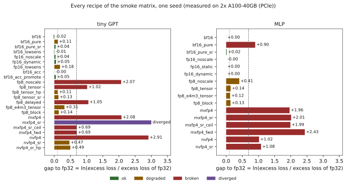
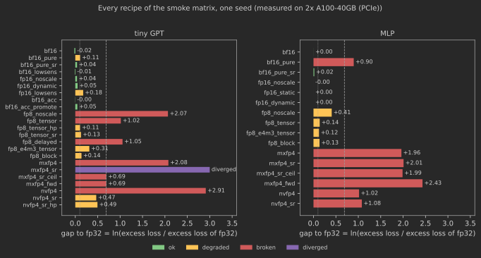
7.6.1 FP16 and loss scaling
At loss weight 1, FP16 without loss scaling is not broken on either model: the transformer’s gap is +0.04 and the MLP’s -0.00, both inside noise, although on average 11.0% of the transformer’s nonzero gradient inputs were flushed to zero and 78% of all of them were stored as subnormals. The gradient histogram (Figure 7.4) explains why. Early in training the gradients reaching the GEMMs peak near \(2^{-20}\), below FP16’s smallest normal number (\(2^{-14}\)) but above its smallest subnormal (\(2^{-24}\)), so most are stored with reduced precision rather than lost. As the model becomes confident, the probabilities it assigns to impossible tokens shrink, their logit gradients \(p_j/N\) shrink with them, and a tail grows below \(2^{-24}\) (14.7% of all values by the end). The tail is large by count and negligible by magnitude: the flushed values carry 0.0056% of the gradient’s \(\ell_1\) mass (the sum of absolute values). The count measures how often FP16 rounds a gradient to zero; the mass measures whether it matters.
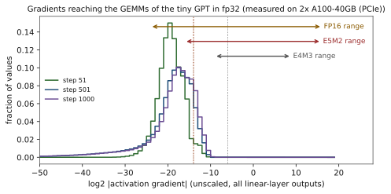
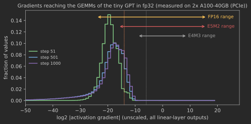
The loss-weight sweep moves the whole histogram down by \(\log_2 w\) binades while leaving exact training unchanged (7.9), and locates the break point (Figure 7.5). At \(w=10^{-2}\) the unscaled run flushes 35.8% of the gradients by count but only 5.57% by mass, and its gap is +0.06. At \(w=10^{-3}\) the flushed mass reaches 13.68% and the gap +0.84; at \(w=10^{-4}\), 26.14% of the mass is gone and the run is broken, stalled (gap +2.69). Dynamic loss scaling is ok at every weight; a static scale of \(2^{10}\) is ok at every weight too (gaps within \(\pm0.01\)): \(2^{10}w\ge0.1\) for every \(w\) we tried, so its gradients are never more than ten times smaller than those of the unscaled \(w=1\) run, which trained normally. The rule that emerges sharpens the qualitative account of Micikevicius et al. (2018): unscaled FP16 breaks when a substantial share of the gradient’s magnitude, not its element count, falls below \(2^{-24}\), and any power-of-two scale that lifts that share into range without overflowing restores training.
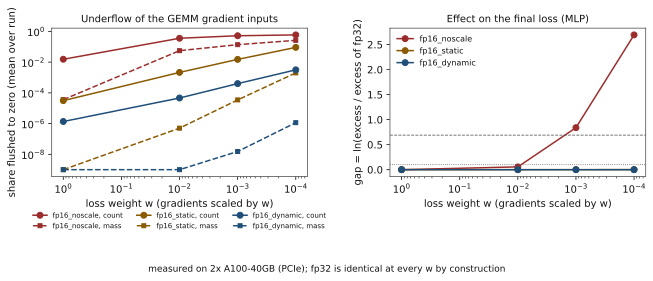
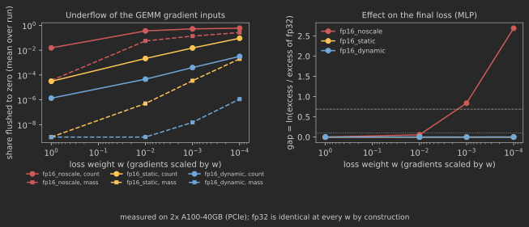
7.6.2 BF16 without master weights
This failure is the clearest of the study. On the MLP, bf16_pure is broken, stalled (gap +0.90): its loss curve separates from FP32’s early and flattens (Figure 7.6), while the update counter shows 67% of all intended updates lost on average, rising to 92% by the end of training as the cosine schedule lowers the learning rate. Stochastic rounding (bf16_pure_sr) recovers FP32 (gap +0.02) with no extra memory. On the transformer, whose learning rate is ten times higher and whose updates are therefore larger relative to the weights, the damage is smaller (+0.11, degraded, though only 0.007 above the “ok” threshold on one seed) but has the same signature: the lost fraction climbs from 4% at the first logged step to 72% at the last, and stochastic rounding brings the gap to +0.04.
The learning-rate sweep shows the failure is set by \(\eta/|w|\), as the band (7.7) says. At \(\eta=3\times10^{-3}\) the lost fraction averages 45% and the gap is +0.68 (degraded); at \(\eta=3\times10^{-4}\) it averages 86% and the run is broken, stalled (gap +0.77). Stochastic rounding is ok at every learning rate. Note that bf16_pure_sr also reports most of its updates as “lost”: under stochastic rounding a single small update usually leaves the weight unchanged too, but it moves the weight by a full ulp with probability \(|\delta|/\operatorname{ulp}\), so the expected displacement is exact (4.4). The counter that matters for SR is the trajectory, not the per-step count.
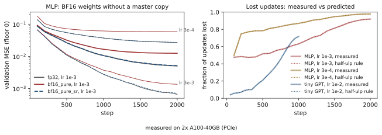
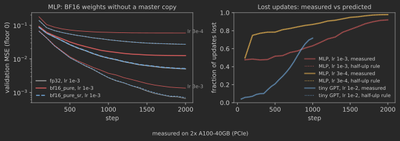
7.6.3 FP8: what each scaling rule buys
Without scales, FP8 does not train the transformer at all: E5M2’s smallest subnormal is \(2^{-16}\), the gradient histogram’s peak sits about four binades below it, and 88% of the gradient inputs (15% of the mass) are flushed. The loss stays at 3.46, the level of a model that ignores its context (\(\ln 32 = 3.47\) for our nearly uniform token frequencies). On the MLP the same recipe is degraded (+0.41) rather than broken, because the regression’s gradients are larger.
A per-tensor scale removes the underflow (0.2% by count), but the transformer is still broken (gap +1.02) with current scaling and +1.05 with delayed scaling. The two scaling rules are indistinguishable here: delayed scaling’s risk, a tensor that outgrows its amax history, did not materialise (the largest activation overflow fraction of any logged interval was 1.7e-06). To find the operand responsible we ran single-seed ablations of fp8_tensor with one or two operand roles returned to BF16 (same configuration and GPU, in separate diagnostic runs that are not part of the results file; validation loss at step 950, where FP32 is at 2.03): with only the forward activations in FP8 the loss was 2.06, with only the weights 2.04, with only the gradients 2.21, and with both forward operands in FP8 and the gradients in BF16, 2.03. The failure lives in the E5M2 gradients. Two recipes of the matrix narrow it further, though neither isolates a single operand: fp8_tensor_hp moves all three operands of the output head to BF16 and brings the gap from +1.02 to +0.11, and fp8_tensor_sr keeps E5M2 but rounds every layer’s gradients stochastically, giving +0.13. On one seed these two numbers are indistinguishable, and both sit just above the “ok” threshold.
The decisive test changes one operand of one layer. Two more diagnostic runs (single seed, separate from the results file; diagnose_fp8_head.py, output in results/diag_fp8_head_a100_pcie.json) keep all of fp8_tensor and alter only the gradient operand of the output head, the logit gradient \(\partial L/\partial z = (p-y)/N\) that feeds both of the head’s backward GEMMs: rounded stochastically instead of to nearest (fp8_tensor_head_g_sr), the gap is +0.07; kept in BF16 (fp8_tensor_head_g_bf16), +0.07. Both are “ok”. Every other gradient in the network is still E5M2 with round-to-nearest, so the failure is in that one tensor.
We also measured the bias directly (diagnose.rounding_bias, on logit gradients captured from the fp8_tensor run at steps 300, 600 and 900). Under E5M2 with round-to-nearest the mean signed rounding error of the logit gradient is \(-1.3\%\), \(-0.50\%\) and \(-0.45\%\) of its mean magnitude: the negative entries (the targets, \(-(1-p)/N\)) are enlarged by 2.3%, 0.7% and 0.6%, the positive ones shrunk by a few tenths of a percent, so the rows no longer sum to zero. Stochastic rounding of the same tensors leaves \(-0.01\%\) to \(-0.06\%\), 8 to 120 times less, and BF16 below \(0.003\%\). The same measurement on an inner layer’s gradient (b1.fc2) gives a mean signed error of at most \(0.01\%\) under E5M2 round-to-nearest: its errors cancel. The head’s weight gradient computed from the rounded logit gradient is off by 7.0% at step 300 with round-to-nearest, against 2.1% for a single stochastic rounding and 0.3% for the mean of 64 of them: most of the round-to-nearest error is a systematic component that does not average away. We read the evidence as follows: the transformer’s FP8 failure is consistent with a rounding bias concentrated in the logit gradient (one seed, one model). The values of \((p-y)/N\) repeat across contexts, because every context of our language has the same Zipf profile, so E5M2’s two fraction bits round the same values the same way on every step, and the optimiser follows the bias where it would average out noise.
E4M3 for the gradients (fp8_e4m3_tensor, gap +0.31) is better than E5M2, as its extra fraction bit predicts (its measured mean signed error on the logit gradient is three to seven times smaller), at a price in underflow (8.2% by count) that per-tensor scaling makes affordable; and E4M3 everywhere with 1-D blocks of 128 along the reduction dimension (fp8_block, +0.14) is better still. Our weights use the same \(1\times128\) blocks as the activations, where DeepSeek-V3 uses \(128\times128\) weight blocks. This is DeepSeek-V3’s “mantissa over exponents” argument (Section 5.7) on a model six million times smaller, and the head result is one reason production FP8 recipes keep the output head in BF16.
On the MLP every scaled FP8 recipe is degraded by about the same amount (gaps +0.14, +0.12, +0.13). The regression drives its error to \(5\times10^{-3}\), and E4M3’s three fraction bits put a floor under the accuracy of the function the network can compute: the MLP measures FP8’s precision, the transformer its bias.
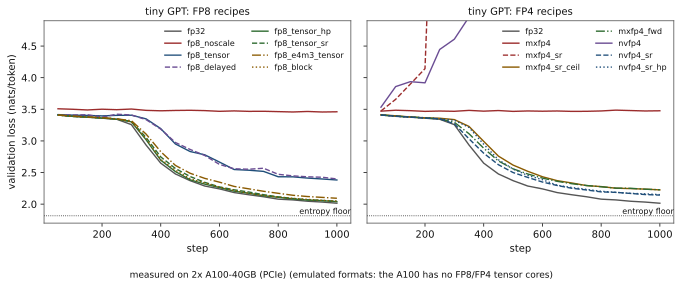
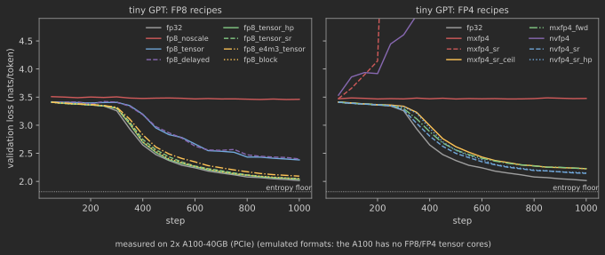
7.6.4 FP4: MXFP4 and NVFP4
With all three GEMMs in FP4 and round-to-nearest, neither format trains the transformer. MXFP4 never leaves the context-free plateau (3.47), and NVFP4 does worse: its loss, training and validation alike, rises after the first hundred steps, to a final validation loss of 5.64, a slow divergence that the explosion detector (three times the initial loss) does not catch. About 33% of the gradient inputs are flushed by count in both, because E2M1’s smallest nonzero magnitude is a twelfth of its largest: within a block, anything below about 4% of the block maximum is zero.
The fixes rank as the FP4 literature predicts. Stochastic rounding of the gradients turns NVFP4 from broken into degraded (+0.47), and keeping the output head in BF16 on top of it changes little (+0.49): with unbiased gradients, the head is no longer special. For MXFP4, stochastic rounding alone made things worse: mxfp4_sr diverged at step 279. The OCP scale rule \(2^{\lfloor\log_2\text{amax}\rfloor-2}\) lets the block maximum saturate (E2M1’s largest value is 6, and a block whose maximum is, say, 7.9 times its scale is clipped to 6), and a clipped value is rounded down deterministically, so stochastic rounding of the rest cannot make the block unbiased. Tseng et al. (2025) avoid exactly this by scaling blocks by 3/4 before stochastic rounding; our mxfp4_sr_ceil uses the other standard remedy, rounding the scale up so nothing saturates, and turns the divergence into a run that trains, at a gap of +0.69 (broken), right on the boundary between degraded and broken. Keeping the whole backward pass in BF16 (mxfp4_fwd) lands at the same place, +0.69 (broken): with an unbiased backward pass, the remaining cost is the FP4 forward pass itself, and NVFP4’s smaller blocks with finer E4M3 scales make that cost smaller (nvfp4_sr at +0.47). On the MLP, every FP4 recipe is broken (mxfp4 +1.96, mxfp4_sr +2.01, mxfp4_sr_ceil +1.99, mxfp4_fwd +2.43, nvfp4 +1.02, nvfp4_sr +1.08), the precision floor of the previous section at a coarser grid.
7.6.5 Accumulation and the sensitive operations
A BF16 accumulator with chunks of 32 changes nothing measurable (bf16_acc -0.00, bf16_acc_promote +0.05), although its weight-gradient GEMMs sum 2,048 tokens: the accumulation error, about 1% for these shapes (one of the exercises measures it), is unbiased under round-to-nearest and small next to the minibatch noise. Low-precision normalisation, softmax and loss behave differently in the two 16-bit formats: in BF16 they are harmless (bf16_lowsens -0.01), in FP16 they degrade the transformer (fp16_lowsens +0.18, degraded). BF16 has fewer fraction bits than FP16, which suggests that the FP16 damage is a range effect rather than a precision effect: the softmax’s small probabilities, and the gradients of the loss with respect to them, fall below FP16’s normal range at the very place where the model is learning which tokens are impossible. This is a hypothesis from one seed, not a measurement: the kit has no counter on these operations, and adding one is the natural next step.
Systems Lens: The cost of an emulated step
The last column of Table 7.4 is a cost model of emulation, not of the formats. The FP32 transformer step takes 14 ms, the MLP’s 2.8 ms: both launch-bound, a few hundred small kernels. A native BF16 cast adds two kernels per cast and roughly triples the step; block formats, which run through numerics.quantize in float64 with reshapes and padding, cost 80–105 ms. A real FP8 or FP4 GEMM on hardware that has it would be faster than BF16; here every quantised operand is an extra pass over memory and a dozen launches. For the full study the cost is what sets the budget (Section 7.10); a fused Triton quantiser (Appendix A) would remove most of it and is a good extension for a reader who has read Part IV.
7.7 Reproducing published findings
7.7.1 The half-ulp rule
The finding: weights stored in a narrow format and updated with round-to-nearest lose every update smaller than half the local gap (Section 4.5; Micikevicius et al., 2018, for FP16; Zamirai et al., 2020, for BF16), and this is what breaks pure-BF16 training. Our reproduction is quantitative at two levels. At the level of single updates, the half-ulp prediction (7.6), evaluated on the intended FP32 update of every weight matrix at every logged step, matches the measured fraction of lost updates to within 2.1e-05 in every bf16_pure run (Table 7.5 and the right panel of Figure 7.6); the residual is the handful of exact ties, which round to even. At the level of the run, the prediction can be made before the failing run exists: the FP32 run’s own updates, pushed through the rule, say that BF16 storage would drop 68% of the MLP’s updates on average; the bf16_pure run then measures 67%.
| run | measured (mean) | predicted (mean) | largest difference |
|---|---|---|---|
gpt/bf16_pure |
0.2985 | 0.2985 | 1.9e-05 |
mlp/bf16_pure |
0.6741 | 0.6741 | 2.1e-05 |
mlp/bf16_pure@lr=0.003 |
0.4471 | 0.4471 | 7.1e-06 |
mlp/bf16_pure@lr=0.0003 |
0.8613 | 0.8613 | 7.1e-06 |
Figure 7.8 shows where the updates sit relative to the band. At 10% of training the transformer’s median ratio is \(3.1\times10^{-2}\) (large updates on small weights, near the peak learning rate); at the last step it is \(1.3\times10^{-3}\), below the lower edge of BF16’s band, and the MLP’s is \(3.4\times10^{-4}\), further below. The textbook “healthy” ratio of \(10^{-3}\) is in BF16’s lost region, as the napkin estimate of Section 7.3 said.
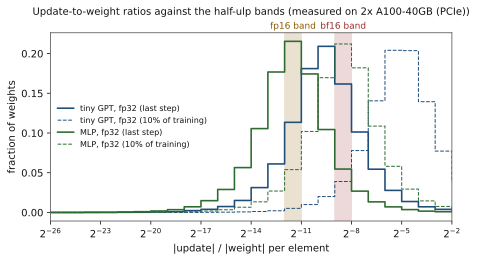
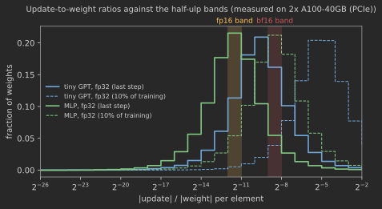
7.7.2 The loss-scaling histogram
Micikevicius et al. (2018) motivated loss scaling with a histogram of activation gradients from one network, showing most of FP16’s range unused above the gradients and a share of them below it. The transformer’s version (Figure 7.4) has the same shape: at step 51, 95.2% of the gradient values lie below FP16’s smallest normal, 5.3% below its smallest subnormal, and the largest is about \(2^{-10}\) (about \(2^{-8}\) by the end of training), so a loss scale up to \(2^{23}\) is guaranteed safe throughout (\(2^{23}\cdot2^{-8}=2^{15}\), while \(2^{24}\cdot2^{-8}=2^{16}\) could already exceed FP16’s overflow threshold of 65,520); the largest safe scale is what dynamic loss scaling searches for by backing off from \(2^{16}\). Where our reproduction goes beyond the paper is in separating count from mass and in locating the break point, which Section 7.6.1 did with the loss-weight sweep.
Deeper Dive: Reading the research: Micikevicius et al. (2018), “Mixed Precision Training”
The cost model, in our notation. The paper’s argument is a byte count and three range arguments. Storing weights, activations and gradients in FP16 halves their bytes, and FP16 tensor cores (then new, on Volta) multiply up to eight times faster than FP32 units. Three things can go wrong, and each gets a fix that costs little. (1) Updates vanish: with FP16 weights an update is lost when the weight is about 2,048 times larger than it, so an FP32 master copy is updated and rounded to FP16 for use, at 4 extra bytes per parameter (6 in total, against 4 for FP32 weights, while activations, which dominate memory in their models, are halved). (2) Gradients underflow: many activation gradients lie below FP16’s smallest subnormal, so the loss is multiplied by a scale \(S\) before the backward pass and the weight gradients are divided by it in FP32. The constraint on \(S\) is that \(S\max|g|\) stays below 65,504; within it, any \(S\) works, and a constant (8 was enough for their detector network) or a dynamic scale that backs off on overflow suffices. (3) Arithmetic loses precision: products are accumulated in FP32, and reductions (batch-norm statistics, softmax) run in FP32 and store FP16.
What our code reproduces. The 2,048 is the upper edge of our FP16 band (7.7): \(2^{-(m+1)}=2^{-11}=1/2048\) for \(m=10\). Our derivation sharpens it into a band, below whose lower edge (\(1/4096\)) every update is lost, and our measurement in Section 7.7 checks the sharpened rule on every weight of every logged step: measured and predicted lost fractions agree to 2.1e-05. For loss scaling, Figure 7.4 is our version of their activation-gradient histogram, from the tiny GPT instead of a detector: the bulk of the distribution sits around \(2^{-20}\), inside FP16’s subnormal range and four binades above its smallest subnormal, and a tail that grows during training lies below it. Their qualitative finding holds: much of FP16’s range above the gradients is unused, a power-of-two scale moves the tail into range, and with \(w=1\) our models did not need it (their detector diverged without scaling; our language model lost +0.04 in gap, inside seed noise). The loss-weight sweep supplies what their paper asserts but does not plot: the point at which unscaled FP16 breaks, between \(w=10^{-2}\) and \(w=10^{-3}\) on the MLP, where the flushed share of the gradient’s magnitude grows from 5.57% to 13.68%.
What the evaluation leaves out. The study reports final accuracy of single runs per network, so it cannot separate a small degradation from seed noise, and it never locates where a recipe starts to fail. It predates BF16, whose exponent range makes loss scaling unnecessary but whose 7-bit fraction makes the master copy more necessary (its band starts at \(2^{-9}\), eight times higher than FP16’s), and it does not consider the optimiser’s state, whose bytes now dominate the training state (Section 5.6). And it treats underflow by count, as a histogram; our runs show that the count can be large while the flushed gradients carry a negligible share of the gradient’s mass, which may be why a scale as small as 8 was enough for them, and the mass is the instrument that predicts when a scale is needed.
7.8 Milestone 5: the write-up
7.8.1 The write-up and its rubric
The write-up is a short paper. Its introduction states the five research questions; its method section describes the emulation precisely enough that a reader could rebuild it (which operands are quantised, in which orientation, with which scale and rounding, where storage casts happen, which operations stay in FP32) and says plainly that FP8 and FP4 are emulated; one results section per question gives the failing recipe, its counter, the fix and its counter, and the break point from a sweep; a reproduction section compares the half-ulp prediction with the measurement; a limitations section says what emulation and scale cannot show. Every number comes from a results JSON written by run.py, every figure from figures.py.
| Criterion | Weight | Full marks |
|---|---|---|
| Emulation correctness | 15% | casts bit-exact against PyTorch; all three GEMMs quantised in the right orientation; TF32 off; evidence from tests, not assertion |
| Mechanisms | 25% | each failure explained by a mechanism and a counter that moved (underflow fraction, lost-update fraction, overflow count), with a prediction made before the run where possible |
| Fixes | 15% | every failure paired with the recipe meant to fix it; whether it recovers FP32’s excess loss, at what cost in bytes or time |
| Break points | 15% | at least two sweeps that locate where a recipe starts to break (loss weight, learning rate, scale, block size), with seeds and error bars |
| Reproduction | 15% | the half-ulp rule (or another published number) reproduced quantitatively; the gap to the paper explained |
| Writing and limits | 15% | claims proportional to evidence; small-scale and emulation limits stated; surprises reported rather than smoothed over |
7.9 Baselines
Three baselines anchor every comparison, and the analysis code knows about all three.
- The floor. The task’s optimal loss, known in closed form. It turns “the curve flattened” into “the excess loss stopped shrinking”, which is the difference between a stall and convergence.
- FP32 with TF32 off, same model, seed, data order and sweep point. Every gap of Table 7.4 is measured against it.
- The production recipes:
bf16(BF16 GEMMs and storage, FP32 master weights) andfp16_dynamic(PyTorch’sGradScalerbehaviour). A low-precision recipe that matches these is as good as what practitioners run; one that matches FP32 but not them would point to a bug.
An external baseline is worth adding for the full study: PyTorch’s own torch.autocast with BF16 and with FP16 plus torch.amp.GradScaler, on the same tiny GPT. Autocast’s operator policy differs from our recipe in details (it keeps some reductions in FP32 that we round), so the comparison checks that our bf16 recipe is not optimistic.
7.10 Compute budget
| Item | GPU time | Status |
|---|---|---|
| smoke configuration: 59 runs, one seed | 53 min | measured (results/smoke_a100_pcie.json), GPU 1 |
| full transformer matrix: 27 recipes \(\times\) 3 seeds at 2,000 steps (width 128, 4 layers, context 64), plus a learning-rate sweep: 87 runs | about 5.6 h | estimate |
| full MLP matrix: 20 recipes \(\times\) 3 seeds at 3,000 steps, plus the learning-rate and loss-weight sweeps with 2 seeds: 138 runs | about 4 h | estimate |
| extensions, debugging and reruns | about 0.5 h | estimate |
| total | about 10 GPU-h | estimate, to calibrate |
The two GPUs are used as two independent workers (make full puts the transformer runs on one and the MLP runs on the other); nothing here communicates over PCIe. Emulation is launch-bound at these sizes, so a CPU with many cores runs the MLP matrix at a usable speed too: make dry exercises every code path in seconds.
7.11 Extensions
- Random Hadamard transforms. Multiply both operands of the weight-gradient GEMM by the same random orthogonal Hadamard matrix before FP4 quantisation (it cancels in the product) and measure how much of the gap of
mxfp4_srit closes, as Tseng et al. (2025) and the NVFP4 recipe do. - Two-dimensional weight blocks. Quantise weights in \(16\times16\) NVFP4 blocks so that the forward and backward quantisations of \(W\) coincide (Section 7.2); does the gradient become more accurate, and does the loss notice?
- The 14-bit accumulator. Run
fp8_block_acc14andfp8_block_acc14_promote(in the full config) and compare the loss gap with the GEMM error measured for the same accumulator model (Sections 4.6 and 5.7). - Low-precision optimiser state. Store Adam’s moments in BF16 or block-quantised 8-bit (Dettmers et al., 2022) and find which of the two moments breaks first; the second moment holds squared gradients and needs range. Needs the optimiser material of Chapter 19 (Part III).
- Kahan-compensated BF16 weights. Keep a BF16 compensation buffer next to BF16 weights (Zamirai et al., 2020): 2 bytes per parameter instead of the master copy’s 4. Does it match
bf16wherebf16_pure_srdoes not? - Instability at scale. Wortsman et al. (2024) reproduce large-model instabilities (attention logit growth, output-logit divergence) in small models by raising the learning rate. Repeat their learning-rate sweep under
bf16,fp8_tensorandnvfp4_sr: does low precision move the instability threshold? Needs the transformer of Chapter 10 (Part II) with QK-norm. - Real FP8. On a Hopper GPU, replace the emulated FP8 GEMMs by
torch._scaled_mmand check that the loss curves match the emulation within seed noise; then measure the speedup the emulation could not (Chapter 23, Part III).
7.12 Research frontier
7.12.1 Open problems
Low-precision training has moved from “does it converge” to “does it converge as well at scale”, and the second question is open in three ways. First, failures appear late: FP8 recipes that match BF16 for hundreds of billions of tokens can diverge after a trillion, because rare activation outliers grow during training (Fishman et al., 2025); a small-scale study like ours cannot see such effects, and nobody yet knows how to predict them from short runs. Second, the gradient formats are the bottleneck: 4-bit forward passes now train well, but 4-bit backward passes still need stochastic rounding, Hadamard transforms and higher-precision layers, and the theory of which bias a deterministic rounding of gradients introduces, and how much of it SGD tolerates, is incomplete. Third, the optimiser is the last FP32 holdout: master weights and Adam moments cost 12 bytes per parameter in a recipe whose GEMMs use one, and stochastic rounding, compensated summation and 8-bit states each remove part of that cost with partially understood effects on the final loss.
7.12.2 The works that define the area
- Micikevicius et al. (2018), mixed-precision training: FP16 GEMMs, FP32 master weights and loss scaling, the recipe every framework still implements.
- Gupta et al. (2015): training with 16-bit fixed point works if updates are rounded stochastically; the first demonstration that the rounding mode, not the bit count, decides.
- Kalamkar et al. (2019): BF16 as a drop-in for FP32 across workloads, with FP32 master weights and no loss scaling.
- Zamirai et al. (2020): pure BF16 training fails through lost updates, and stochastic rounding or Kahan summation in the weight update repairs it.
- Wang et al. (2018) and Sun et al. (2019): 8-bit floating-point training, chunk-based accumulation and the hybrid E4M3-forward/E5M2-backward split that FP8 hardware adopted.
- Micikevicius et al. (2022): the FP8 formats themselves, with per-tensor scaling, validated on large language models.
- Peng et al. (2023), FP8-LM: FP8 extended to gradients, optimiser state and communication. DeepSeek-AI (2024), DeepSeek-V3: fine-grained block scales and promoted accumulation at the scale of a 671B-parameter model, with FP32 master weights and BF16 optimiser moments.
- Rouhani et al. (2023): the MX formats, block scaling with power-of-two scales, as a training format.
- Tseng et al. (2025) and NVIDIA (2025): FP4 training of language models, with stochastic rounding of gradients, random Hadamard transforms and a few layers kept in higher precision; the recipes our
mxfp4_srandnvfp4_sr_hpimitate. - Fishman et al. (2025): FP8 training at trillion-token scale fails through outlier amplification in SwiGLU that short runs do not show.
7.12.3 Assumptions that are likely to break
Our emulation assumes that a format is defined by its grid and its scale. Hardware adds two things that it does not model: accumulators whose precision and rounding are undocumented and differ between generations (DeepSeek-V3 measured about 14 bits on Hopper; Section 4.6), and fused kernels that choose where casts happen, so the same recipe on two libraries performs different roundings. The standard recipe assumes that the sensitive operations are a small fraction of the FLOPs and can stay in FP32; with FP4 GEMMs running four times faster than BF16, the FP32 norms, softmax and optimiser become the bottleneck, and the pressure to lower them will grow. And the whole field assumes that a small-scale study predicts a large-scale one. Our tasks are chosen so that failures are visible in minutes; the failures that matter most in production take weeks to appear.
7.12.4 How to recognise the next variant
New low-precision training papers vary along a few axes. Which tensors: weights, activations, gradients, optimiser state, communication, each in forward and backward. Element format: integer, FP8, FP6, FP4, or a custom grid. Scale granularity and format: per tensor, per row, per block of \(k\) (1-D or 2-D), with FP32, E4M3 or power-of-two scales, one or two levels. When the scale is known: delayed, current, or predicted. Rounding: nearest, stochastic, with how many random bits, and where. Accumulation: FP32, limited with promotion, or split. Transforms: Hadamard rotations, smoothing, outlier channels kept apart. What stays high precision: which layers, norms, the loss, master weights. Evidence: model size, tokens, and whether the comparison to BF16 is at equal tokens with seeds. Place a new paper on these axes, and its novelty is usually one coordinate.
7.13 Summary
- A low-precision training study needs three things beyond a training loop: an emulation that quantises all three GEMMs of every linear layer (forward, input gradient, weight gradient), each operand blocked along its own reduction dimension; counters that turn each failure mode into a number (overflow, underflow by count and by magnitude, lost updates); and tasks with a known optimal loss, so that a stall is distinguishable from convergence. Emulation reproduces numerics exactly and speed not at all.
- FP16 without loss scaling broke only when a sizeable share of the gradient’s magnitude fell below \(2^{-24}\): at loss weight 1 it was within noise on both models despite flushing 11.0% of the transformer’s gradient elements (but 0.0056% of their magnitude); at \(w=10^{-3}\), with 13.68% of the magnitude flushed, it was broken, while a static scale of \(2^{10}\) and dynamic scaling were ok at every weight.
- BF16 without master weights failed through lost updates, exactly as the half-ulp rule predicts: measured and predicted lost fractions agree to 2.1e-05, the prediction can be made from the FP32 run, and the textbook update ratio of \(10^{-3}\) lies below BF16’s band \((2^{-9}, 2^{-8}]\). Stochastic rounding recovered FP32 at every learning rate tried.
- FP8 without scales did not train the transformer; per-tensor scaling removed the underflow but left the transformer broken (gap +1.02). Changing only the output head’s logit-gradient operand, to stochastic rounding or to BF16, recovered it (+0.07 either way, single-seed diagnostic runs), and the measured mean signed rounding error of that tensor under E5M2 was 0.5–1.3% of its magnitude, 8 to 120 times that of stochastic rounding: consistent with a rounding bias concentrated in the logit gradient (one seed). E4M3 with block scales did better than the E4M3/E5M2 hybrid: mantissa over exponent.
- FP4 with round-to-nearest gradients did not train the transformer; stochastic rounding is necessary but not sufficient: with the OCP MX scale rule the saturated block maxima kept a bias and the run diverged, while a scale rule without saturation trained, at the edge of broken (gap +0.69); NVFP4 with stochastic rounding did better (+0.47). A BF16 accumulator and BF16 normalisation and softmax were harmless at this scale; FP16 normalisation and softmax were not, a range effect.
7.14 Exercises
Exercise 7.1 (The band for every format).
Derive the relative half-ulp band (7.7) for FP32, TF32, FP16, BF16, E4M3 and E5M2. For each, at what learning rate does AdamW stop moving a weight of magnitude 0.02, and one of magnitude 1? Which of these formats could hold weights without a master copy in a run whose final learning rate is \(3\times10^{-5}\)?
Exercise 7.2 (How small are the gradients?).
For a mean cross-entropy over \(N\) tokens and vocabulary \(V\), show that the gradient with respect to logit \(z_{t,j}\) is \((p_{t,j}-y_{t,j})/N\). For our smoke transformer near the floor of (7.8), estimate the median magnitude of the logit gradients and say which of FP16, E5M2 and E4M3 represents it as a normal, a subnormal or zero; check against the first histogram of Figure 7.4. Then repeat the estimate for a GPT-2-sized run: \(N=8\times1{,}024\) tokens, \(V=50{,}257\), and a model that spreads its probability over a few hundred plausible tokens.
Exercise 7.3 (The largest safe loss scale).
From the last histogram of Figure 7.4, find the largest power-of-two loss scale \(S\) that keeps every gradient below FP16’s maximum, and the fraction of nonzero gradients that would still be flushed at that \(S\). Why does PyTorch’s GradScaler start at \(2^{16}\) and back off, instead of computing \(S\) from such a histogram?
Exercise 7.4 (Delayed scaling under a spike).
A tensor’s amax is 1.0 for 100 steps and then 8.0 at one step. With E4M3, history length \(L\) and margin \(\mu\), how many elements saturate at the spike, and by how much is the largest one clipped? How many steps does the history need to recover, and what does a margin of \(\mu=1\) cost in precision on the ordinary steps? Verify with emulate.Quantizer and QSpec("e4m3", "delayed").
Exercise 7.5 (Stochastic rounding’s noise floor).
Stochastic rounding makes the update to a BF16 weight unbiased, with variance up to \(\operatorname{ulp}(w)^2/4\) per step (4.4). For a weight of magnitude 0.02 receiving updates of size \(10^{-5}\) over \(T\) steps, compare the accumulated signal \(T\cdot10^{-5}\) with the accumulated noise. After how many steps does the signal dominate? Relate the answer to the gap that bf16_pure_sr leaves in Table 7.4.
Exercise 7.6 (Block orientation).
For the weight-gradient GEMM \(\partial L/\partial W = (\partial L/\partial Y)^\top X\) of a linear layer with \(n\) tokens, explain why MX blocks must run along the token dimension. Modify a copy of QLinearFn to block \(X\) along \(d_{\text{in}}\) in the backward pass instead (the wrong orientation) and measure the error of the weight gradient against FP32 on a random layer. Is the error larger or smaller, and why is the wrong version nevertheless not implementable on MX hardware?
Exercise 7.7 (The accumulator that loses).
Using (7.4), estimate the relative error of a BF16-accumulated weight-gradient GEMM with \(K=2{,}048\) tokens and chunk 32, with and without promotion every 128 elements. Then measure it with emulate.qmm on random operands and compare with the training result of bf16_acc and bf16_acc_promote. Why can a gradient error of this size leave the loss unaffected?
Exercise 7.8 (Pricing the fixes).
For a 7B-parameter model trained with AdamW, compute the bytes per parameter and the total memory of the training state for bf16, bf16_pure, bf16_pure_sr, fp8_tensor (FP8 weights in the GEMMs, FP32 master) and a variant with BF16 Adam moments. Which fix of this chapter is free in memory, which costs 4 bytes per parameter, and which costs time instead?
Exercise 7.9 (Research: extend the study to the Quartet setting).
Castro et al. (2025) train language models with all three GEMMs in FP4 and argue that the right comparison is loss at equal compute, not equal steps, since FP4 GEMMs are faster. Using the datasheet speedups of FP8 and FP4 over BF16 on Blackwell (2x and 4x) and the step-count gaps of your smoke runs, recompute the comparison of Table 7.4 at equal compute. Which FP4 recipe wins, and how would you check the claim on real hardware?
Exercise 7.10 (Research: predict, then measure, the BF16 break point).
From an FP32 run’s update-ratio histograms alone, predict the learning rate at which bf16_pure’s gap to FP32 crosses 0.10 on the MLP, using the band (7.7) and the assumption that a weight whose updates are lost stops learning. Then run the learning-rate sweep of the full config and compare. Where does the prediction fail, and which weights does it get wrong?
Exercise 7.11 (Research: FP8 with Hopper’s accumulator).
Predict, then measure with fp8_block_acc14 and fp8_block_acc14_promote, how the transformer’s gap changes when the FP8 GEMMs accumulate in a 14-bit, round-toward-zero accumulator (the DeepSeek-V3 observation about Hopper). Which of the three GEMMs is most affected, and why does the answer depend on the batch size in tokens?